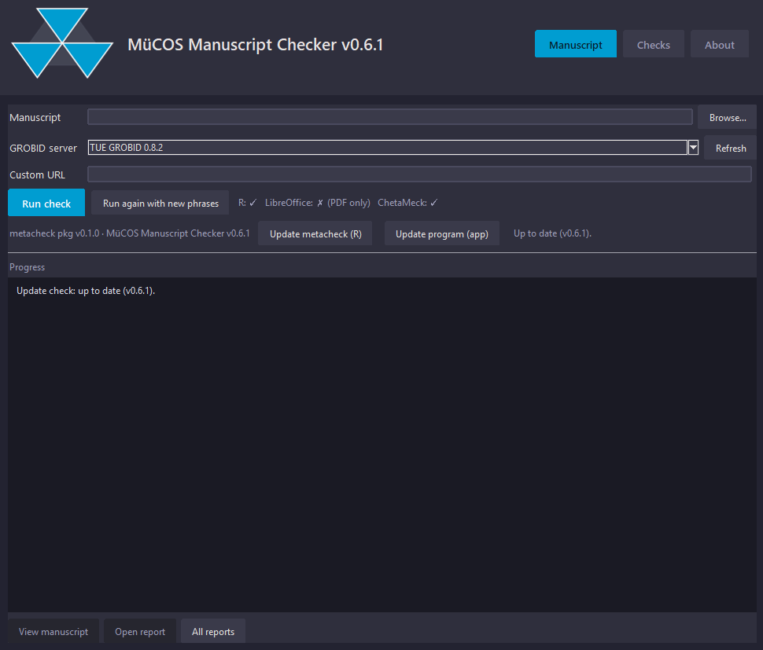

MüCOS Manuscript Checker
Automated meta-scientific quality checks for your manuscript.

What it does
Turn a manuscript (PDF, DOCX, DOC or HTML) into a formatted meta-scientific quality report. The app converts your document with GROBID and runs one or more check engines — currently:
Metacheck (R)
The original set of manuscript checks, via the R metacheck package.
ChetaMeck (Python)
An independent reimplementation plus forensic metascience (GRIM, GRIMMER, DEBIT…), effect-size & CI consistency, and R2 editorial checks.
Plagiarism Check
Licence-free text-overlap detection against open full texts and your own local files.
Install
Portable Windows desktop app — download, run the setup once, then double-click the exe.
ManuscriptChecker.exe.setup.bat once (installs the R metacheck package if missing).ManuscriptChecker.exe (or Start Metacheck.bat).
The target PC still needs R (plus the metacheck package) and
LibreOffice if you want to convert DOCX/HTML. GROBID is reached over the
internet by default.